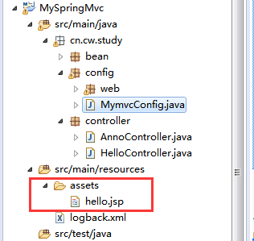

title: SpringMVC配置
comments: true #是否可评论
toc: true #是否显示文章目录
categories: “spring-mvc” #分类
tags: #标签
- SpringMVC配置
Spring mvc 的定制配置需要我们的配置类继承一个WebMvcConfigurerAdapter类，并在此类使用@EnableWebMvc注解，来开启对spring mvc 的配置支持，这样我们就可以重写这类的方法，完成我们的配置。
@Controller
public class HelloController {
@RequestMapping("/hello")
public String hello(){
System.out.println("hello");
return "hello";
}
}
public class WebInitializer implements WebApplicationInitializer{
// WebApplicationInitializer 是spring 提供用来配置servlet3.0+配置的接口，从而实现了替代web.xml的位置。
// 实现此接口将会自动被springServletContainerInitializer(用来启动servlet3.0容器)获取到
@Override
public void onStartup(ServletContext servletContext) throws ServletException {
// TODO Auto-generated method stub
AnnotationConfigWebApplicationContext context = new AnnotationConfigWebApplicationContext();
context.register(MymvcConfig.class);
context.setServletContext(servletContext);
Dynamic servlet = servletContext.addServlet("dispatcher", new DispatcherServlet(context));
servlet.addMapping("/");
servlet.setLoadOnStartup(1);
}
}@Configuration
@EnableWebMvc //开启spring mvc支持，若无此句，重写WebMvcConfigurerAdapter方法无效
@ComponentScan("cn.cw.study")
public class MymvcConfig extends WebMvcConfigurerAdapter{
@Bean
public InternalResourceViewResolver viewResolver(){
InternalResourceViewResolver resolver = new InternalResourceViewResolver();
// E:\javaworkspace\.metadata\.plugins\org.eclipse.wst.server.core\tmp1\wtpwebapps\MySpringMvc\WEB-INF\classes\assets
resolver.setPrefix("/WEB-INF/classes/assets/");//此路径需要找页面编译后的路径
//运行时代码会将页面自动编译到 "/WEB-INF/classes/views/"
resolver.setSuffix(".jsp");
resolver.setViewClass(JstlView.class);
return resolver;
}
//重写此方法可对spring mvc进行配置
@Override
public void addResourceHandlers(ResourceHandlerRegistry registry) {
// TODO Auto-generated method stub
//addResourceHandler对外暴露的访问路径 //addResourceLocations配置文件放置的目录
registry.addResourceHandler("/assets/**").addResourceLocations("classpath:/assets/");
}
}<%@ page pageEncoding="utf-8"%>
<html>
<head></head>
<body>
<%--使用out.print("hello jsp");方式输出 --%>
<%
for(int i=0;i<10;i++){
out.println("hello jsp<br>");
}
%>
<!--使用<%="hello jsp"%>方式输出--%>
<%
for(int i=0;i<10;i++){
%>
<%="no."+(i+1)+"hello jssssp" %><br>
<% } %>
</body>
</html>拦截器(interceptor)实现对每一个请求处理前后进行相关的业务处理，类似于servlet的filter,可让普通的Bean实现HandlerInterceptor接口或者继承HandlerInterceptorAdapter类来实现自定义拦截器。
通过重写WebMVCConfigurerAdapter的addInterceptors方法来注册自定义的拦截器。
代码示例：
//继承HandlerInterceptorAdapter来实现自定义拦截器
public class DemoInterceptor extends HandlerInterceptorAdapter{
//请求发生前执行
@Override
public boolean preHandle(HttpServletRequest request, HttpServletResponse response, Object handler)
throws Exception {
// TODO Auto-generated method stub
System.out.println(request.getRequestURL());
long startTime = System.currentTimeMillis();
request.setAttribute("startTime", startTime);
return true;
}
//请求完成后执行
@Override
public void postHandle(HttpServletRequest request, HttpServletResponse response, Object handler,
ModelAndView modelAndView) throws Exception {
// TODO Auto-generated method stub
long attribute =(Long) request.getAttribute("startTime");
request.removeAttribute("startTime");
long endTime = System.currentTimeMillis();
System.out.println("本次请求处理时间为："+new Long(endTime-attribute)+"ms");
}
}
@Repository //使spring进行管理
public class DemoConfigurerIntercepter extends WebMvcConfigurerAdapter{
@Bean //使spring进行管理自定义拦截器
public DemoInterceptor demoInterceptor(){
return new DemoInterceptor();
}
@Override
public void addInterceptors(InterceptorRegistry registry) {
// TODO Auto-generated method stub
registry.addInterceptor(demoInterceptor());
}
}我们可以将对于控制器的全局配置放置在同一个位置，注解了@Controller的类的方法可使用
@ExceptionHandler、@InitBinder、@ModelAttribute注解到方法上，这对所有注解了
@RequestMapping的控制器内的方法有效。
用于全局处理控制器里的异常。用来设置webDataBinder, webDataBinder用来自动绑定前台请求参数到model中。作用是绑定键值对到model里，此处是让全局的@RequestMapping都能获得在此处设置的键值对。代码示例：
A.配置@ControllerAdvice
@ControllerAdvice
//声明一个 控制器建言，@ControllerAdvice组合了@Component注解，所以自动注册为spring的bean
public class ExceptionHandlerAdvice {
@ExceptionHandler(value = Exception.class) //定义全局处理，拦截所有的Exception
public ModelAndView exception(Exception exception,WebRequest request){
ModelAndView view = new ModelAndView("error");
view.addObject("errorMessage", exception.getMessage());
return view;
}
@ModelAttribute
//使用@ModelAttribute注解将键值对添加到全局，所有注解了@RequestMapping的方法可获得此键值对
public void addAttributes(Model model){
model.addAttribute("msg", "额外信息");
}
@InitBinder //注解定制webDataBinder 更多的关于webDataBinder的配置，可参考webDataBinder的API文档
public void initBinder(WebDataBinder webDataBinder){
//演示忽略request参数的Id
webDataBinder.setDisallowedFields("id");
}
}
B.测试controller
@Controller
public class AdviceController {
@RequestMapping("/advice")
public String getSomething(@ModelAttribute("msg") String msg,RequestBean bean) throws IllegalAccessException{
System.out.println("id="+bean.getId());//0 ，说明id已经被过滤了
System.out.println("name="+bean.getName());//cc
throw new IllegalAccessException("参数有误,来自@ModelAttribute:"+msg);
}
}
C.Error.jsp
<%@ page pageEncoding="utf-8"%>
<html>
<head></head>
<body>
${errorMessage}
</body>
</html>@Controller
public class WebMvcController {
@RequestMapping("/index")
public String hello(){
return "hello";
}
}另一种写法：
@Component
public class WebMvC extends WebMvcConfigurerAdapter{
@Override
public void addViewControllers(ViewControllerRegistry registry) {
registry.addViewController("/index").setViewName("/hello");
}
}请查看WebMvcConfigurerAdapter类的API,WebMvcConfigurer的Api也可以来配置MVC.